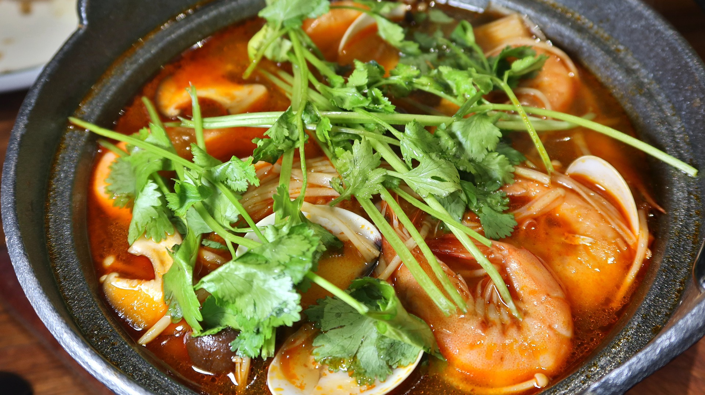

Tom-Yum Soup

Tom-Yum soup width coriander topping
Tom yum is a type of hot and sour Thai soup usually cooked with shrimp.
Tom yum is characterised by its distinct hot and sour flavours, with fragrant spices and herbs generously used in
the broth.
Ingrediends
- 2 quarts chicken broth
- 4 stalks lemongrass
- 10 Thai chile peppers, seeded and minced
- 5 cloves garlic, crushed
- 10 kaffir lime leaves, torn
- 1 (1 inch) piece galangal, thinly sliced
- 1 ½ pounds raw shrimp, deveined
- ½ pound fresh oyster mushrooms, stemmed and sliced
- 2 medium white onions, cut into large slices
- 2 Roma tomatoes, cored and chopped
- ½ cup fish sauce, or more to taste
- 2 tablespoons white sugar
- 1 bunch fresh cilantro, chopped
- ½ cup fresh lime juice, or more to taste
Steps
- Bring broth to a boil in a large pot.
- Remove the outermost leaf from each stalk of lemongrass. Pound stalks to release flavor; cut into 1-inch
lengths. Add the lemongrass, Thai chiles, garlic, lime leaves, and galangal to the broth. Cover and boil for
10 minutes.
- Reduce heat and add shrimp, mushrooms, onions, and tomatoes to the broth. Boil for 3 minutes. Add fish sauce
and sugar; cook for 2 minutes more and remove from heat. Stir in cilantro and lime juice.
- Enjoy!